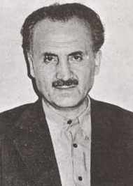

Abdullah Yeðin [1924]

Bediüzzaman ve Risâle-i Nur’u tanýdýktan sonra ömrünü iman hizmetinde geçiren simalardan biridir. Dindar bir ailenin çocuðu olarak dünyaya gelmiþtir. Henüz orta okul öðrencisi iken Risâle-i Nur’u tanýmýþ ve arkadaþlarýyla birlikte sorduklarý soru, Risâle-i Nur’un bir konusu olarak kayda geçmiþtir. Bediüzzaman tarafýndan Urfa’da hizmet etmek üzere görevlendirilmiþ, bundan sonra askerlik hizmeti hariç buradan hiç ayrýlmamýþtýr. Ancak, Bediüzzaman’ýn vefatýndan sonra Urfa’da kalmasýna izin verilmemiþtir. 23 Mart 1960 tarihinden sonra ülkemizin deðiþik beldelerinde iman hizmetini devam ettirmiþtir.Abdullah Yeðin, 1924 yýlýnda Kastamonu’ya baðlý Araç ilçesinin Kýyan köyünde dünyaya geldi. Öðretmen bir babanýn oðlu olup Süleyman ve Ayþe çiftinin oðludur. Ailesi asýrlar öncesinden Baðdat taraflarýndan göç edip Kastamonu’ya gelmiþ ve Araç ilçesinin Kýyan köyüne yerleþmiþlerdir. Dindar biri olan Süleyman öðretmen, oðlunu da dindar bir kiþi olarak yetiþtirmeye gayret etti.
Abdullah Yeðin, ilkokula 1930 yýlýnda ve babasýnýn öðretmenlik yaptýðý komþu Muðamlar köyünde baþladý. Babasý ile birlikte, uzun bir yolu kat etmekte, yaya olarak okula gitmekteydi. Ýlk üç yýl burada okuduktan sonra, dördüncü ve beþinci sýnýflarý Araç ilçesinde devam okudu. Orta okulu ise, Kastamonu’da bitirdi. Henüz ikinci sýnýfta iken gördüðü bir rüya ve sýnýf arkadaþý Rýfat ile çevresindekilerin sýkça övgüyle yâd ettikleri Bediüzzaman ismi kendisini etkilemeye baþladý. Bu arada babasýnýn getirtmiþ olduðu dinî kitaplarý okumakta ve böylece dine meyilli bir insan olarak yetiþmekte idi.
Kastamonu’da “hocaefendi, evliyadan bir zât” olarak konuþulan Bediüzzaman Hazretlerini arkadaþý Rýfat ile birlikte ilk defa 1940 yýlýnda ziyaret etti. Akabinde ziyaretlerine devam etti. Bunlardan birinde, Bediüzzaman Hazretleri; “Seni büyük biraderim Molla Abdullah yerine kabul ettim. Sen benim kardaþýmsýn” diyerek iltifatta bulundu. Bediüzzaman Hazretleri 1936 yýlýndan itibaren Kastamonu’da zorunlu ikamete tabî tutulmuþ ve bir polis karakolunun karþýsýnda oturmaktaydý. Onun ziyaretine gitmek için bazý sýkýntý ve takibatlarý da göze almak gerekmekteydi. Dolayýsýyla ziyarete gidenler cesaret sahibi ve dindar kimselerdi.
Abdullah Yeðin ile birlikte Bediüzzaman’ý ziyaret eden gençler, “Muallimlerimiz Allah’tan bahsetmiyor. Bize Hâlýkýmýzý tanýttýr” isteði üzerine, kendilerine geniþ bir izahat yapýldýðý gibi, sorularý ve verilen cevap Risâle-i Nur’un da bir konusu olarak kayda geçti. Bediüzzaman Hazretlerini ziyaret eden Abdullah, önce öðretmeni tarafýndan azarlandý. Hakkýnda soruþturma yapýldý ve disiplin kuruluna verildi. Sorguya çekilerek ziyaret sebebi soruldu. O da dinini öðrenmek için gittiðini söyledi. Disiplin kurulu tarafýndan bir hafta okuldan uzaklaþtýrma cezasý verildi.
Kastamonu’da bulunduðu sürece Bediüzzaman’ý ziyaret eden Abdullah Yeðin yeni yazý ile Risâle-i Nur’u yazan talebelerin ilklerinden oldu. Kendilerine verilen Risâleleri örnek alarak yeni nüshalar yazma iþinde kendisi de istihdam edilmiþ olmaktaydý. Bediüzzaman 1943 yýlýnda mahkeme için Denizli’ye gittiði gibi, Abdullah Yeðin de lise eðitimini tamamladýktan sonra üniversite eðitimi için Ankara’ya gitti. Burada Hukuk fakültesine kaydýný yaptýrdý. Denizli Mahkemesinden sonra Bediüzzaman’ýn yeni ikamet yeri Emirdað oldu (1944).
Ankara Üniversitesi Hukuk Fakültesine baþlayan Abdullah Yeðin, umduðunu bulamadý. Özellikle Ýslâm Hukuku aleyhindeki konuþma ve sözler kendisini rahatsýz etti. Bu rahatsýzlýk sýnýfta kalmayla sonuçlandý. Buraya ýsýnamayýnca, ayrýlýp Dil Tarih Fakültesine geçiþ yaptý. Yeni fakültesinde baþta Arapça olmak üzere Farsça, Almanca ve felsefe aðýrlýklý alanda eðitimini sürdürdü. Risâle-i Nur’la da alâkasý giderek arttý. Memuriyete atýlmaktan çok, iman hizmetinde bulunmayý ciddî ciddî düþünmeye baþladý.
Bediüzzaman, “Araçlý Abdullah” dediði, talebesine iltifatta bulundu ve yaptýðý hizmeti övdü; “Ankara Dar'ül fünûnunda Nura ehemmiyetli hizmet eden ve Kastamonu’da mektep gençlerinden en evvel Nurlara giren ve Ankara’daki Abdurrahman’ýn oðlu Vahdet’i himaye ve muhafazaya çalýþan Araçlý Abdullah’ýn mektubunda tam imanlý ve dindarâne ve müjdekârâne yazmasý ve orada okuyucularýn çok olmasýyla ellerindeki Risâlenin kâfi olmadýðýna … bizi ve Nur dairesini tamamýyla mesrur ettiði gibi, bu bayramda da büyük bir manevî hediye olarak kabul ediyoruz. Cenâb-ý Hak, onlarýn umumundan razý olsun. ...” (Emirdað Lâhikasý, s. 236)
Abdullah Yeðin, fakülte son sýnýfta iken yaz tatilinden istifade ederek 1950 yýlýnda Bediüzzaman’ý ziyarete gitti. Ancak bu, bir ziyaretten çok yanýnda kalma ve okulu býrakma amaçlý idi. Düþüncesini açýklayýnca Bediüzzaman Hazretleri; herkesi yanýna kabul etmediðini, þartlarý olduðunu, kendisinden hiçbir þeyin beklenmeyip istenmemesini, sýrf Allah rýzasý için hizmet etme amacýný taþýmayý; hasta, ihtiyar, kimsesiz, bakýma muhtaç bir kimse olarak görüp bu düþünce ile kendisine hizmet edilmesi gerektiðini belirtti. Yaz boyunca yanýnda kaldýðý Bediüzzaman tarafýndan hizmet için Urfa’ya gönderildi.
Urfa’da hizmet etmek üzere görevlendirilen Abdullah Yeðin hemen görev yerine hareket etti. Askerlik hizmeti için ayrýldýðý süre hariç, Bediüzzaman’ýn vefatýna kadar Urfa’da kalarak hizmette bulundu. Ancak, buradaki hizmet kolay olmadý. Çok sýnýrlý imkânlar çerçevesinde insanlara iman ve Kur’ân dersleri verirken, diðer taraftan da takibata uðramaktaydý. Sadece dinî hizmet ifa etmesine raðmen on beþ defadan fazla mahkemeye verildi. Dört defa hapis cezasýna çarptýrýldý.
Abdullah Yeðin’in üniversite öðrenciliði sýrasýnda da basýnda sýk sýk irtica yaygarasý koparýlmaktaydý. Bu durumdan rahatsýzlýk duyduklarý için elliden fazla arkadaþýyla birlikte Millî Eðitim Bakaný Tevfik Ýleri’yi ziyarete gittiler ve baþbakanla görüþme arzularýný dile getirdiler. Bakanýn da yardýmýyla Baþbakan Adnan Menderes tarafýndan kabul edildiler (1951). Gayet sýcak karþýlanan üniversiteli gençler, “Üniversitede irtica olmadýðýný ilân edeceðiz, gazetelere yazacaðýz” demeleri üzerine, Baþbakan, gazeteye yazmaya gerek olmadýðýný, üniversitede irticanýn olmadýðýný bildiðini kendilerine söyledi.
Adnan Menderes ile görüþen Abdullah Yeðin ve arkadaþlarý, zamanýn Diyanet Ýþleri Baþkaný olan Ahmet Hamdi Akseki’yi de Keçiören’deki evinde ziyaret ettiler. Sohbet sýrasýnda, Bediüzzaman’ý tanýyýp tanýmadýðýný sordular. Akseki; onu tanýdýðýný, hakikî bir hoca olduðunu, kendileri gibi olmadýðýný, Risâle-i Nur’u okumalarýný, ancak durumun nezaketinden ötürü dikkatli davranmalarýný tembihledi.
Abdullah Yeðin'i Urfa’ya gönderen Bediüzzaman Hazretleri, kendisinin de Urfa’ya geleceðini ifade etmiþ ve bir kýsým eþyalarýný da önceden göndermiþti. Ancak, bu gayesini vefatýna sadece birkaç gün kala gerçekleþtirebildi ve 22 Mart 1960 tarihinde Urfa’ya geldi. Bir gün sonra da burada vefat etti. Vefattan sonra, hiçbir gerekçe ve sebep olmamasýna raðmen, Abdullah Yeðin’in Urfa’da kalmasýna izin verilmedi. Buradan ayrýlýp Kastamonu’ya gitti. Ardýndan Ankara’ya geçti. Bu sýrada Bediüzzaman’ýn mezarýnýn açýldýðý, naaþýnýn nakledildiði haberini duyunca, hemen, gizlice Urfa’ya gitti. Yirmi gün kadar burada kaldý. Dýþarý çýktýðý gün, polisler tarafýndan tutuklanýp Urfa dýþýna çýkartýldý.
Urfa’da ikametine izin verilmeyen Abdullah Yeðin, en yakýn il olan Gaziantep’e yerleþip iman hizmetini burada devam ettirdi. Ancak, burada da sürekli takip edilip kitaplarý toplatýlmakta ve karakollarda gözetim altýnda tutulmaktaydý. Bir süre sonra Adana’ya gitti ve on sene kadar burada hizmete devam etti.
Risâle-i Nur'dan örnek metinlerle de desteklenen ve büyük emekleri geçtiði lûgat çalýþmasý “Yeni Lûgat” adýyla kendi imzasýyla neþredildi. (Kaynak: risaleinurenstitusu.org)
Risale-i Nur'da Abdullah Yeðin
| · | Þimdi manevî evlâtlarým, fedakâr hizmetkârlarým olan Zübeyir, Ceylan, Sungur, Bayram, Hüsnü, Abdullah, Mustafa gibi has ve halis Nur'un kahramanlarý... Said Nursî |
| · | Araçlý Abdullah'ýn mektubunda tam imanlý ve dindarane ve müjdekârane yazmasý... Said Nursî |

HATIRALAR
Buraya bir hoca gelmiþ, ziyaretine gidelim
1940'ta Kastamonu Lisesi'nde talebe iken benim gibi 'Rifat' adýnda dindar bir arkadaþým vardý. Bir gün bana, 'Buraya bir hoca gelmiþ, ziyaretine gidelim' dedi. Ben de, 'Peki gidelim' dedim. Vardýðýmýzda Üstad yataða yarý uzanmýþ, yani bir yere dayanmýþ, belinden yukarýsý dik. Saçlarý kulaklarýna kadar uzun, gözündeki gözlük hafif öne düþmüþ halde elinde bir kitap vardý.
Biz selâm verip elini öptük. Bize gözlüðün üzerinden hafif bakarak "Maþaallah, maþaallah!" diyerek bir-iki iltifat etti ve iman-ahiret dersleri verdi... (Aðabeyler Anlatýyor Cilt-1)
Ben eski Abdullah'ýmý kaybetmiþim!
Baþka bir gün, "Muallimlerimiz Allah'tan bahsetmiyorlar, bize Hâlýkýmýzý tanýttýr" demiþtim. Üstad uzun izahlarda bulunarak cevaplar verdi. Daha sonra 'Altýncý Mesele' olarak yazýldý.
Biz gittiðimizde ekseriyetle Mehmet Feyzi Efendi bize risalelerden okur, biz de yeni yazýyla kendi defterimize yazardýk.
Ben o zamanlarda Üstad'ý tam tanýyamamýþtým. Bir zaman sonra Üstad'ý Ýstanbul'da ziyaret ettiðimde, daha saygýlý ve daha hürmetkar idim. Üstad o zaman bana, "Ben eski Abdullah'ýmý kaybetmiþim!" demiþti. (Aðabeyler Anlatýyor Cilt-1)
Halk Partililerin dükkanlarýnýn önünden geçerdi
Üstadýmýz hem çok tevazu sahibiydi, hem de kimseyi gücendirmezdi. Kim olursa olsun Üstadýmýzý bir defa ziyaret eden, bir defa görüþen hemen dost olurdu. Emirdað'da bulunduðumuz yerin yaný baþýnda Halk Partisi'ne mensup kimselerin dükkanlarý vardý. Üstadýmýzýn yolu oraya düþmezken hususî arabayý o tarafa çevirttirir, onlara selâm verirdi. Onlar da "Üstad bizi seviyor" derler, sevinirlerdi. (Aðabeyler Anlatýyor Cilt-1)
Sen partinde kal, bizi müdafaa et
Emirdað'da 'Süleyman' isminde birisi Millet Partisi'ne iltihak etmiþ idi. Bu þahýs Üstadýmýzýn Demokrat Parti'ye rey verdiðini bildiði için, "Üstad'ým! Ben de DP'ye geçeceðim" dedi. Üstad'ýmýz, "Yok, olmaz! Sen Millet Partisi içinde kal, bizim aleyhimizde konuþan olursa bizi müdafaa edersin" dedi, müsaade etmedi. (Aðabeyler Anlatýyor Cilt-1)
Senin hatýrýn için müsaade ettim
Üstad'ýmýz, Abdullah Aðabeye dedi ki: "Abdullah! Bu yeni hurufla tab'ý senin hatýrýn için müsaade ettim, bütün Külliyat senin hatýrýn için yeni harfle tabedildi." Ýþte Üstad, Abdullah Aðabeye böyle iltifat etmiþti... (Nakleden Mustafa Sungur) (Aðabeyler Anlatýyor Cilt-1)
Sýla-i rahim, mektupla da olur
Urfa'da dershanede kalýyordum. Dört sene kadar olmuþ, ayrýlamamýþtým. Üstad'a bir mektup gelmiþ. Ya benim aðabeyim yazmýþ o mektubu veya annem birine yazdýrmýþ... Annem mektupta demiþ ki: 'Ben hastayým, eðer bir-iki ay izin alýp gelmezse ben hakkýmý helâl etmiyorum!'
Üstad'a böyle bir mektup gelmiþ. Benim haberim yok... Mektubu Üstad'a okumuþlar. Güya Üstad demiþ: "Bir-iki ay izin yok, bir-iki gün var." Bunu da söyleyen Zekeriya Kitapçý, þimdi Konya'da profesör... O bana iki satýr mektup yazmýþ: 'Üstad'ýmýza böyle bir mektup geldi, annen hastaymýþ, Üstad bir-iki gün izin verdi' diye...
Ben Zekeriya'nýn mektubunu alýnca, 'Epeydir Üstad'a gidememiþtim, bir-iki gün izinle Üstad'a da uðrarým' diye doðru Isparta'ya gittim. Üstad Emirdað'a gitmiþ, ben de Emirdað'a geçtim. Trenle giderken Nuri isminde Haymanalý birine rastladým. O da Üstad'a gidiyormuþ. Tanýþtýk, Üstad'a beraber gittik. Ýkimiz odaya ayný anda beraber girdik. Üstad benimle hiç konuþmuyor, Nuri ile konuþuyordu hep.
Neyse onu gönderdi, bana, 'Sen niye geldin?' dedi. Ben de dedim: 'Annemden böyle bir mektup gelmiþ, siz demiþsiniz ki: Bir-iki ay izin yok, bir-iki gün var.' Üstad, 'Benim haberim yok!' dedi. Orada Ceylan Aðabey vardý. 'Efendim! Bu, Zekeriya'nýn dolmuþuna binmiþ...' dedi. (Abdullah Yeðin Aðabey bunlarý anlatýrken bir taraftan kendisi gülüyor, bizi de güldürüyordu.) 'Peki, bugün burada kal' dedi.
Üstad ertesi gün, "Orasý yalnýz olmaz, geriye dön. Sen mektup yazmýyorsun, sýla-i rahim mektupla da olur, sýla-i rahim yapmýyorsun. Senin orayý terk etmen olmaz, eðer seni görmek isteyen varsa onlar gelsin" dedi. Müsaade etmedi. Beni tekrar Urfa'ya gönderdi. O zaman dershanede Abdülkadir Badýllý yalnýz kalmýþtý. (Aðabeyler Anlatýyor Cilt-1)
Hukukullah, hukuk-u Resulullah, hukuk-u Üstad...
Üstad ile þöyle bir hatýramýz geçti, tarihini tam hatýrlayamýyorum.
Üstad elini açtý. Baþparmaðý göstererek, 'Þu hukukullahý gösterir (baþparmaðý kapadý); þu hukuk-u Resulullah (iþaret parmaðýný kapadý), þu hukuk-u Üstad (orta parmaðý kapadý), þu hukuk-u vâlide (yüzük parmaðýný kapadý), þu hukuk-u peder (serçe parmaðýný kapadý)...' Sonra elini tam kapatarak, yani yumruk yaparak, 'Bak bu baþparmak hepsini karþýlýyor mu? Ýþte bunlar hukukullaha aykýrý hiçbir þey emredemezler, (küçük parmaklar) emretseler de dinlenmez' dedi. (Aðabeyler Anlatýyor Cilt-1)
Memuriyetin þartlarý nelerdir?
Bir gün Üstad dedi: 'Memuriyete müsaadem yok, sadece üç þartla müsaadem var:
1. Memuriyeti Risale-i Nur'a, dine, imana hizmete vesile yapacak.
2. Memuriyeti dürüst yapacak, aldýðý maaþý helâl ettirecek, doðruluktan ayrýlmayacak.
3. Aldýðý maaþý iktisatla sarf edecek, zaruri masraflarýna sarf edecek.
"Bu üç þartý yerine getirenlere memuriyeti müsaade ediyorum." Daha çok öðretmenliðe teþvik ederdi. (Aðabeyler Anlatýyor Cilt-1)
Üstad'ý Urfa'ya davet etmiþtim
Ceylan bana telgraf çekmiþti, "Üstad yalnýz" diye... Urfa'dan Isparta'ya gittim, yanýnda Vahþi Þaban, Küçük Ali Efendi vardý. Bana, "Ben yalnýzým diye seni çaðýrmýþlar, ben yalnýz deðilim, sen orayý yalnýz býrakma, tekrar Urfa'ya git" dedi.
Gitmiþken Üstad'ý Urfa'ya davet ettim. Bana dedi: "Orada Risale-i Nur yok mu? Risale-i Nur varsa bana ihtiyaç yoktur, Risale-i Nur olan yerde Risale-i Nur benim vazifemi yapar."
Tekrar sordum: 'Üstad'ým, gelmeyecek misiniz?' Hiç ses çýkarmadý, ne 'geleceðim' dedi, ne de 'gelmeyeceðim' dedi; sükut etti. Üstad 'geleceðim' dedi mi gelir, çünkü Üstad yalan söylemez. Ayrýldýk, bir ay sonra hasta olarak geldi Urfa'ya... (Aðabeyler Anlatýyor Cilt-1)
Üstad hüngür hüngür aðladý
Üstadýmýzla beraber Sarýyer'e gitmiþtik. Otomobilde Üstad, ben ve þoför vardý. Denize baka baka geliyorduk. Üstadýmýz bir kadýnla erkeðin birbirine sarýlmýþ vaziyetlerini görünce birden hýzla baþýný öteki tarafa çevirdi ve baþladý hüngür hüngür aðlamaya... Kim bilir bugünleri mi görmüþtü?
Üstad vesile olmak için çalýþýyordu. Gözüne kestirdiðini hemen yanýna çaðýrýrdý. Türkmenoðlu bu þekilde talebe olmuþtur... (Aðabeyler Anlatýyor Cilt-1)
Üstad'a gelen ihtar ve Sungur Aðabeyin babasý
Üstadýmýz Emirdað'da iken ben de orada idim. Ramazan bayramý namazýna gittik. Namazdan çýkarken Üstadýmýz buyurdu ki: "Bir Mehmet hakkýnda ihtar var." Bize en yakýn, Mehmet Çalýþkan'dý o zaman. Üstad'ýn dýþ iþlerini görüyordu, mektup adresleri falan Çalýþkan Aðabeye aitti. "Onu çaðýr, hakkýnda ihtar var, masonlar aldatýyorlar!" dedi. Ben de gittim çaðýrdým. Bayram sabahý, erkenden dükkaný açmýþ, dükkanda bekliyormuþ. Üstadýmýz, "Bize en yakýn Mehmet sensin, olsa olsa bu Mehmet sen olmalýsýn. Dikkat et kimseye kapýlma, kimseye aldanma!" diye ona yarým saat nasihat etti.. Sonra Çalýþkan Aðabey çok müteessir oldu, 'Ben ne yaptým acaba? Ben kötü bir þey yapmadým' diye...
Bir-iki saat sonra Üstad bana, 'Git bakalým þöyle bir dolaþ, bakalým ne var ne yok' dedi. Ben Çalýþkan Aðabeyin dükkanýna gittim. Birisi gelse zaten öncelikle onun dükkanýna gelirdi. Mektup gelse onun adresine gelirdi. Onun adresi, Üstad'ýn adresiydi. O gün birkaç tane mektup gelmiþ, mektuplarý Üstad'a getirdim. Üstad hepsini birer birer okudu.
Bir Mehmet'ten mektup geliyor. Mektup resmî, sarý bir zarfa yazýlmýþ. Yazan, Mustafa Sungur'un babasý, Denizli tarafýnda hocaymýþ. Oðlunu þikâyet ediyor. 'Senin taleben böyle mi olur? Çoluðuna çocuðuna bakmýyor, geliyor senin yanýna; iþi gücü sana hizmet etmek' vs. diye uzun bir þikâyet mektubu. Hemen Üstad dedi, "Tamam, ihtar belli oldu. Mehmet Çalýþkan'ý çaðýr, onu teselli edelim" dedi. Çalýþkan Aðabeyi çaðýrdým. Üstad, "Bak bu mektupta ne yazýyor. Her þeyini feda etmiþ, gece gündüz Risale-i Nur'la hizmet edeceðim, diyen oðlunu þikâyet ediyor. Masonlar böyle insanlarý aldatýyor!" dedi.
Ondan sonra Sungur Aðabeyin babasýna mektup yazýlýyor. Ben yoktum, Üstad'ý ziyarete geliyor; artýk Üstadýmýz ona neler söylediyse tam irþad ve ikna olmuþ. Ondan sonra ben bir kere gördüm; "Ben Sungur'a yetiþemiyorum, Sungur hizmette beni geçti" diyordu. Sonra Sungur Aðabeyi Üstad'ýn emrine vakfetmiþ. "Üstad'ým! Benim bunda hiç hakkým yoktur! Senin emrindedir!" demiþ. (Aðabeyler Anlatýyor Cilt-1)